Chronic Wounds (Professional Edition for Healthcare Providers)
1. Shared Definitions and Assessment Principles for Chronic Wounds
1. Time-Based Definition (Tiered, Not a Single Threshold)
- About 4 weeks of appropriate treatment without the expected reduction or progress → delayed-healing alert: reassess etiology, perfusion, infection, pressure, and treatment adherence
- Non-healing for 4–6 weeks → clinically classified as a hard-to-heal / chronic wound requiring dedicated management
- More than 3 months → a definitively long-standing non-healing wound
2. Assessment Items Common to All Chronic Wounds
- Location, number, duration, and history of recurrence
- Length, width, depth, area, undermining, sinus tracts, and cavities
- Proportions of granulation tissue, slough, eschar, epithelium, and exposed deep structures
- Wound edges, periwound skin, edema, and maceration
- Exudate volume, color, viscosity, odor, and bleeding
- Pain severity, character, and whether it is proportionate to wound appearance
- Foot/limb sensation, mobility, and sources of pressure
- Pulses, ABI, TBI, toe pressures, Doppler waveforms; TcPO₂ or skin perfusion pressure when indicated
- Warning signs of clinical infection, spreading infection, sepsis, and osteomyelitis
- Standardized photography and rate of change in wound area
2. Types of Chronic Wounds (14 Categories)
1. Diabetic foot ulcer (DFU)
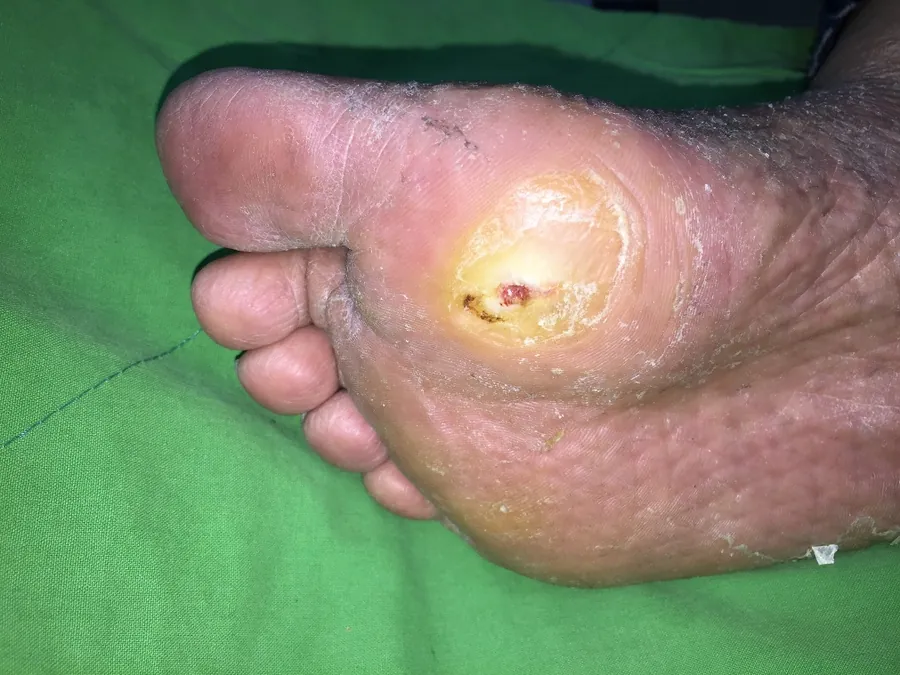
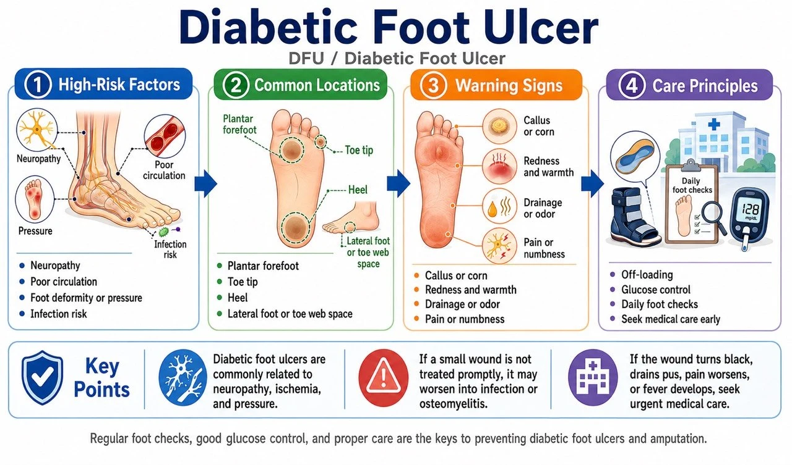
Definition and features: Full-thickness skin loss on the foot of a patient with diabetes, associated with neuropathy, foot deformity, repetitive pressure, and PAD. Predilection sites include the plantar metatarsal heads, heel, toe tips, interdigital spaces, and areas of footwear pressure. The neuropathic type occurs at weight-bearing points with surrounding callus and minimal pain; the ischemic type occurs at the toe tips or lateral foot, is more painful, with cool skin and weak pulses. Diagnosis is made once the etiology is clear — do not wait 4 weeks.
Etiology and risk factors: Sensorimotor and autonomic neuropathy; foot deformity, Charcot foot, and abnormal plantar pressures; ill-fitting footwear, walking barefoot, or self-trimming of calluses; PAD, renal failure, dialysis, smoking, advanced age; poor glycemic control, impaired vision, and prior ulceration or amputation; infection and osteomyelitis.
Assessment tools: 10-g monofilament and tuning-fork vibration testing; dorsalis pedis and posterior tibial pulses and perfusion; ABI, TBI/toe pressures, and Doppler (vascular calcification can falsely elevate ABI); probe-to-bone testing and X-ray, with MRI considered when osteomyelitis is suspected; SINBAD/UT/WIfI classification; IWGDF/IDSA grading for infection; post-debridement deep tissue specimens are superior to surface swabs.
Treatment: Effective offloading is the cornerstone for plantar neuropathic ulcers; remove callus and devitalized tissue (assess perfusion first in severe ischemia); systemic antibiotics only for clinical infection — do not treat colonization; evaluate for revascularization early in PAD; select dressings according to exudate and wound bed; consider negative pressure wound therapy and cellular/tissue-based products for hard-to-heal ulcers; hyperbaric oxygen is not routine therapy and is assessed case by case in selected patients.
Prevention and education: Inspect the soles, interdigital spaces, heels, and inside of shoes daily; do not walk barefoot, use hot water bottles, or self-trim calluses; well-fitting footwear and therapeutic insoles; glycemic control and smoking cessation; continue offloading after healing with regular foot risk assessment. (IWGDF 2023)
2. Pressure injury
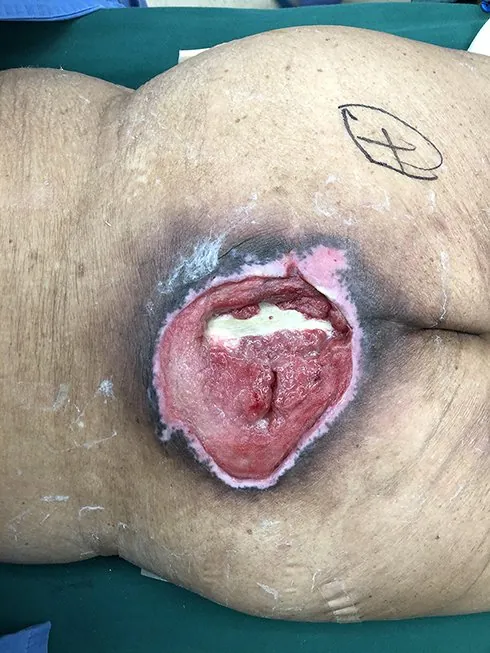
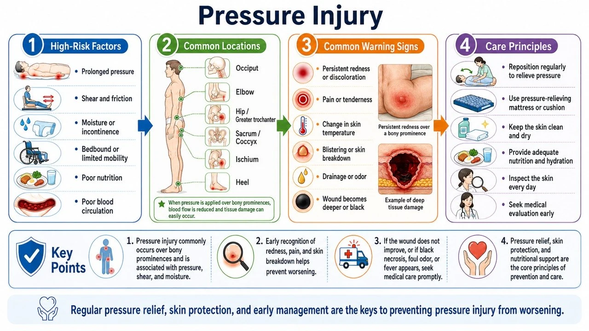
Definition and features: Localized damage to the skin and/or underlying soft tissue caused by sustained pressure (or pressure combined with shear). Predilection sites include the sacrococcygeal area, heels, ischial tuberosities, greater trochanters, malleoli, and occiput; also occurs under devices such as oxygen masks, nasogastric tubes, and casts. Classified as Stage 1–4, Unstageable, and DTPI. Can develop within a short time; if no improvement at 4 weeks, proceed to hard-to-heal wound evaluation.
Etiology and risk factors: Inability to reposition, paralysis, sedation, or impaired consciousness; pressure, shear, friction, and an adverse microclimate; incontinence, moisture, fever, and diaphoresis; hypoperfusion, hypotension, anemia; malnutrition, low body weight or obesity; advanced age, end-stage disease, and device-related pressure.
Assessment tools: Full-body skin examination (including under devices); risk tools such as the Braden Scale (not a substitute for clinical judgment); documentation of depth, undermining, sinus tracts, and necrosis; osteomyelitis workup (probe-to-bone, X-ray, MRI, bone biopsy); evaluate rapidly deteriorating wounds for deep infection and necrotizing soft tissue infection; in darkly pigmented skin, also assess temperature, induration, pain, and tissue consistency.
Treatment: Complete pressure redistribution with repositioning; appropriate mattresses, cushions, and heel offloading; choose the debridement method according to perfusion, necrosis pattern, and goals of care; manage infection, incontinence, pain, nutrition, and contractures; consider negative pressure therapy for deep wounds; consider surgical debridement and flap reconstruction for large Stage 3–4 injuries; stable, dry, non-infected ischemic heel eschar should not be debrided indiscriminately — assess perfusion first.
Prevention and education: Individualized repositioning schedules based on risk; daily inspection of bony prominences and under devices; manage incontinence and moisture with skin barrier products; correct transfer technique avoiding dragging; scheduled pressure relief while seated; support surfaces cannot fully replace repositioning. (International Pressure Injury Guideline 2019)
3. Arterial ulcer
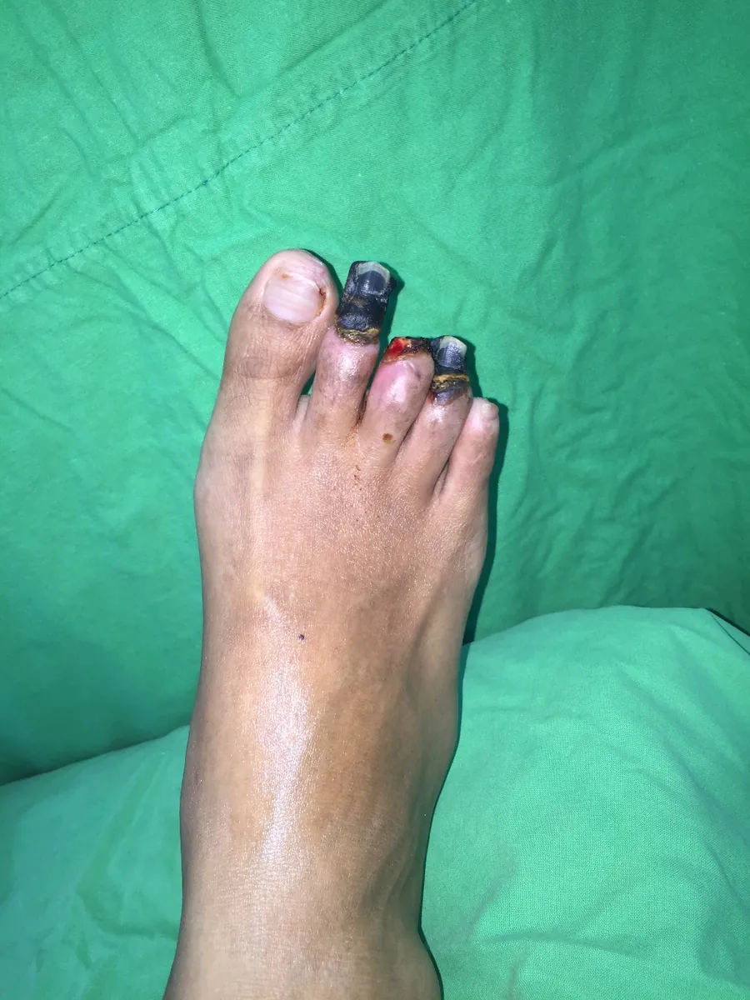
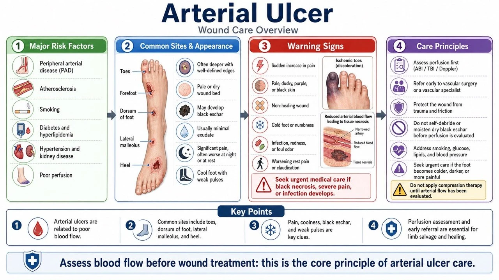
Definition and features: Ischemia, necrosis, or ulceration caused by inadequate arterial perfusion. Common at the toe tips, interdigital spaces, heel, lateral malleolus, lateral foot, and pressure points. Punched-out appearance with a pale or necrotic base and scant exudate; surrounding skin is cool, pale, and hairless with weak pulses; rest pain and nocturnal pain that improves with dependency. An ulcer combined with ischemia establishes the diagnosis.
Etiology and risk factors: Atherosclerotic PAD; diabetes, smoking, hypertension, dyslipidemia; chronic kidney disease and dialysis; thrombosis, embolism, vasculitis; local pressure or trauma superimposed on hypoperfusion.
Assessment tools: Pulses, temperature, skin color, and capillary refill; ABI (use TBI, toe pressures, or Doppler waveforms when calcification is suspected); TcPO₂ or skin perfusion pressure to assess healing potential; WIfI classification; Duplex, CTA, MRA, or angiography to plan revascularization.
Treatment: Refer promptly to a vascular specialist for endovascular or surgical revascularization; antiplatelet therapy, lipid lowering, blood pressure and diabetes management, and smoking cessation; avoid aggressive removal of stable dry eschar before ischemia is addressed; avoid inappropriate high-pressure compression; treat infection and wet gangrene urgently; debride and reconstruct after perfusion is restored.
Prevention and education: Stop smoking; control glucose, lipids, and blood pressure; daily foot inspection, avoiding barefoot walking, burns, and shoe pressure; do not self-trim eschar or corns; seek immediate care for rest pain, blackened toes, or a cold wound or foot. (SVS; Conte 2019 GVG)
4. Venous leg ulcer
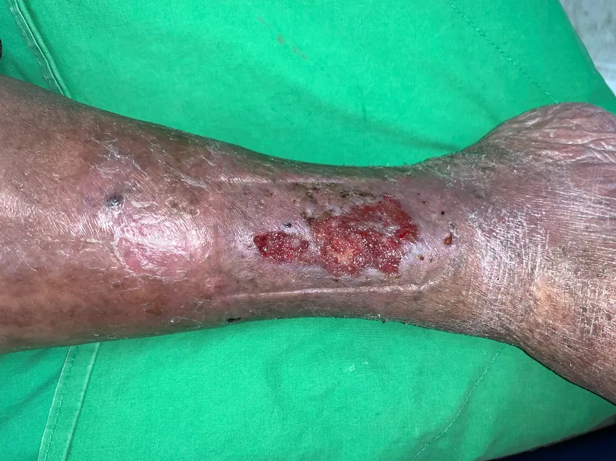
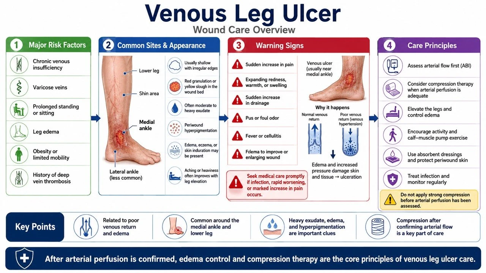
Definition and features: Skin changes and ulceration caused by chronic venous hypertension. Predilection for the gaiter area of the lower leg (especially the medial malleolus). Relatively shallow with irregular edges and heavy exudate; accompanied by edema, varicose veins, hyperpigmentation, lipodermatosclerosis, and venous eczema. Most definitions require a lower-leg ulcer unhealed for 4–6 weeks in the context of venous disease.
Etiology and risk factors: Deep or superficial venous reflux; venous obstruction or prior DVT; poor calf muscle pump function; obesity, prolonged standing, inactivity, advanced age; prior venous leg ulcer.
Assessment tools: Assessment of edema, varicosities, pigmentation, and induration; pedal pulses and ABI (add TBI in diabetes or calcification); Duplex evaluation of reflux or obstruction; CEAP classification; do not diagnose infection solely on a positive surface culture.
Treatment: Once arterial perfusion is confirmed acceptable, compression therapy is the cornerstone; multilayer bandaging, short-stretch systems, or compression stockings; leg elevation, walking, and calf muscle pump exercises; manage exudate, protect periwound skin, and debride appropriately; evaluate superficial venous intervention; antibiotics only for clinical infection.
Prevention and education: Long-term therapeutic compression stockings after healing; activity, ankle exercises, and weight control; avoid prolonged standing or leg dependency; moisturize and manage venous eczema; regularly check stocking size, elasticity, and donning technique.
5. Lymphedema / Chronic Edema-Related Wounds
Definition and features: Impaired lymphatic drainage or long-standing interstitial fluid accumulation causing fragile skin, lymphorrhea, and ulceration. Common on the lower leg, ankle, dorsum of the foot, or in limbs after cancer treatment. Non-pitting edema, skin thickening, papillomatous changes, and lymphatic fluid leakage.
Etiology and risk factors: Primary lymphatic abnormalities; lymph node dissection, radiotherapy, or tumor obstruction; obesity, inactivity, recurrent cellulitis; chronic venous disease, heart failure, or renal disease; skin barrier breakdown and fungal infection.
Assessment tools: Limb circumference, volume, skin thickness, and Stemmer sign; exclude DVT, acute cellulitis, and decompensated heart failure; assess arterial perfusion in lower-limb wounds; Duplex or lymphoscintigraphy when indicated; document leakage volume and maceration.
Treatment: Individualized compression therapy after excluding contraindications; skin care, exercise, elevation, and lymphedema rehabilitation; highly absorbent dressings to manage lymphatic fluid; treat recurrent cellulitis according to infection guidelines; consider lymphatic surgery or debulking procedures in selected patients.
Prevention and education: Daily cleansing and moisturizing, treating interdigital fungal infection; avoid cuts, burns, and unnecessary punctures; wear compression garments as prescribed; exercise and weight management; redness, warmth, and pain with fever warrant immediate evaluation for cellulitis.
6. Mixed arterial-venous ulcer
Definition and features: Coexisting venous hypertension and inadequate arterial perfusion. Edema, hyperpigmentation, cool feet, and diminished pulses may all be present; location and appearance fall between typical venous and arterial patterns.
Assessment tools: ABI, TBI/toe pressures, Doppler waveforms, and TcPO₂ when indicated; arterial and venous Duplex; compression intensity should not be determined by a single ABI value alone.
Treatment: Perfusion risk stratification by a vascular specialist first; mild-to-moderate arterial disease may allow reduced/modified compression under professional monitoring; prioritize revascularization assessment in severe ischemia; adjust debridement and dressings according to perfusion and disease activity; expedite management of infection or gangrene.
Prevention and education: Do not self-apply high-compression stockings or bandages; use compression, activity, and foot protection as prescribed; smoking cessation and management of atherosclerotic risk factors; stop compression and seek care immediately if pain increases or the foot becomes cold or discolored.
7. Radiation-induced wound
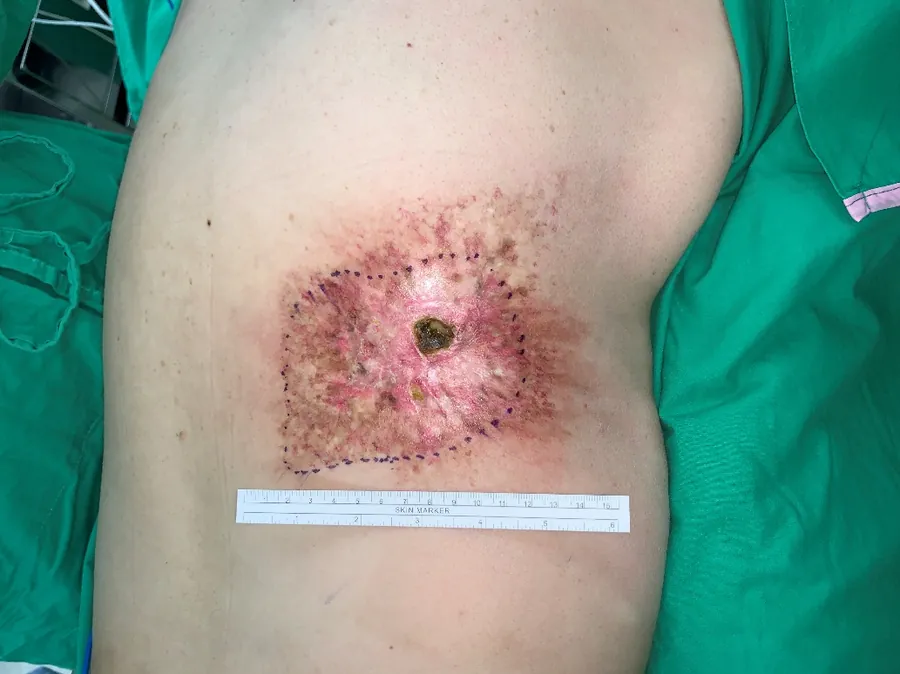
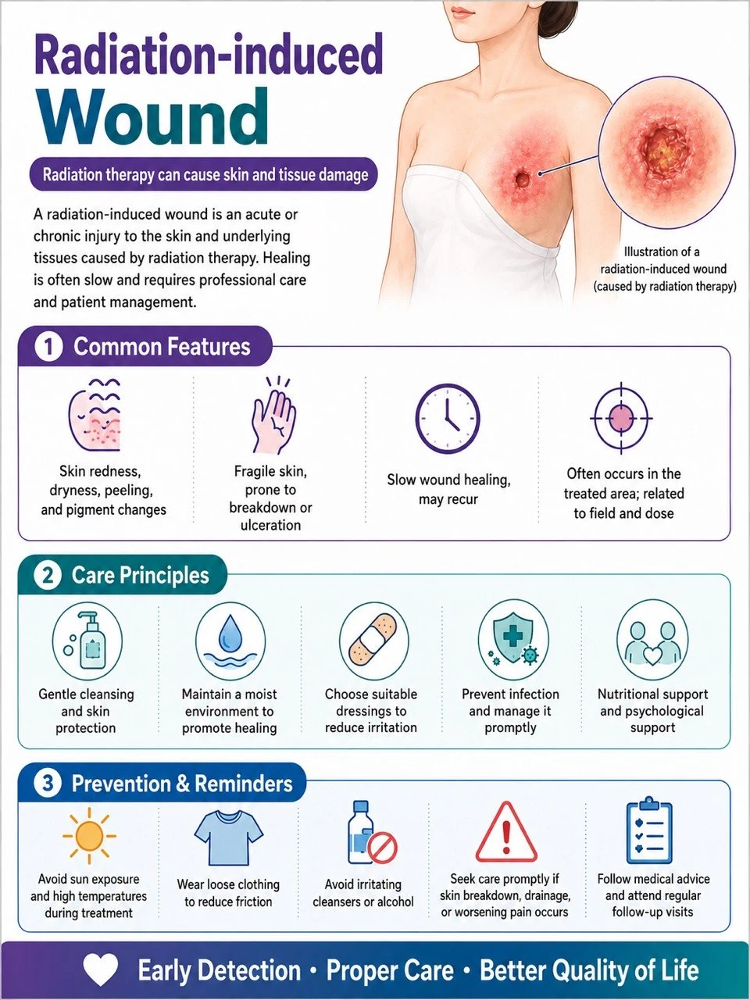
Definition and features: Radiation causes vascular endothelial injury, fibrosis, tissue hypoxia, and reduced regenerative capacity. Acute radiation dermatitis occurs during treatment; late ulceration may appear months to years afterward. Common on the breast/chest wall, head and neck, pelvis, or previously irradiated fields. Surrounding skin shows atrophy, fibrosis, telangiectasia, and pigmentary changes.
Assessment tools: Records of radiotherapy site, timing, and dose; assess fibrosis, bone exposure, fistulae, and deep infection; imaging to exclude osteoradionecrosis, abscess, or tumor recurrence; biopsy atypical or progressive wounds; perfusion and tissue oxygenation studies when indicated.
Treatment: Exclude tumor recurrence first; gentle debridement and atraumatic dressings; treat infection, pain, and nutrition; specialist evaluation for hyperbaric oxygen in selected cases; extensive fibrosis or necrosis may require excision to healthy tissue plus reconstruction with a well-vascularized flap.
Prevention and education: Avoid friction, burns, and sun exposure in irradiated areas; gentle cleansing and moisturizing; do not self-apply irritating agents or adhesive materials; new ulcers, lumps, bleeding, or pain warrant early return to oncology / plastic surgery. (NCI)
8. Malignant / fungating wound
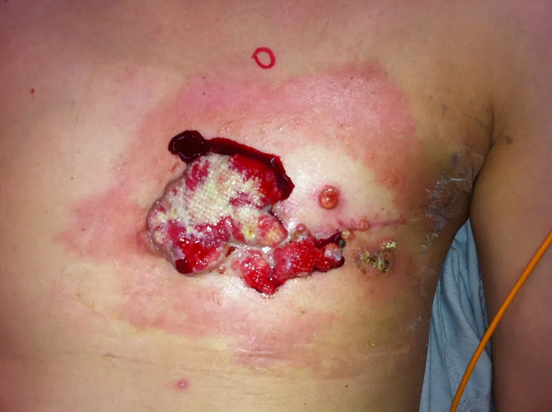
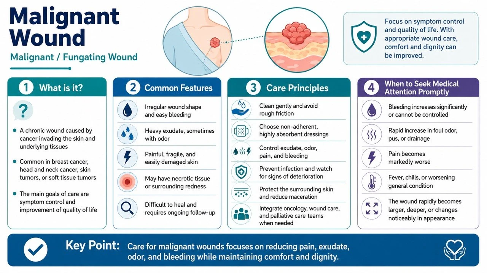
Definition and features: Ulceration, fungating growth, or necrosis caused by direct tumor invasion of the skin or cutaneous metastasis. Common in breast cancer, head and neck cancer, skin cancer, or metastatic lesions. Heavy exudate, malodor, easy bleeding, pain, and exophytic masses. The diagnosis is determined by tumor invasion.
Assessment tools: Oncologic history, pathology, and imaging; document size, elevation, necrosis, bleeding, exudate, odor, and pain; biopsy any wound of unknown neoplastic nature; distinguish colonization, local infection, and systemic infection; assess for major vessel invasion and risk of catastrophic hemorrhage.
Treatment: Center care on oncologic treatment, symptom control, and patient goals; low-adherence, highly absorbent dressings and skin protectants; manage odor with cleansing, control of necrosis, and specific topical therapies; avoid aggressive debridement of friable, bleeding-prone tissue; have local hemostatic agents and an emergency bleeding plan ready; consider radiotherapy, systemic therapy, surgery, or interventional hemostasis; involve palliative care, pain medicine, and psychological support early.
Prevention and education: Teach atraumatic dressing changes and bleeding management; keep dark-colored towels, hemostatic supplies, and emergency contact information available; monitor bleeding, infection, pain, and exudate; respect privacy, odor control, and life goals; for most patients the goal is symptom control rather than guaranteed complete healing. (Macmillan)
9. Non-healing Postoperative Wounds
Definition and features: A surgical incision that fails to heal within the expected time, or develops dehiscence, infection, sinus tracts, chronic drainage, or implant exposure. Seen in abdominal, sternal, perineal, orthopedic, and reconstructive surgical sites. Lack of progress 4 weeks after surgery warrants complete etiologic reassessment; distinguish superficial dehiscence, deep fascial dehiscence, and organ-space infection.
Assessment tools: Surgical approach, implants, and postoperative course; depth, fascial integrity, undermining, sinus tracts, and drainage; ultrasound or CT to assess deep fluid collections or abscess; deep cultures after debridement; for long-standing sinus tracts, exclude foreign body, osteomyelitis, enteric fistula, or malignancy.
Treatment: Control infection, remove necrotic tissue, and manage hematoma and abscess; determine whether implants must be removed; negative pressure therapy in appropriate cases; address dead space, fascial defects, and fistulae; delayed closure, skin grafting, or flap reconstruction once stabilized; evisceration or fascial dehiscence is a surgical emergency.
Prevention and education: Preoperative smoking cessation and optimization of glycemia and nutrition; SSI prevention protocols; avoid tension and inappropriate activity; teach warning signs of redness, swelling, purulent drainage, dehiscence, and fever; clear postoperative follow-up arrangements.
10. Inflammatory ulcer
Definition and features: An umbrella term for ulcers caused by immune dysregulation or systemic inflammatory disease (neutrophilic dermatoses, connective tissue diseases, thrombotic disorders, etc.). Severe pain, inflamed edges, rapid enlargement, or multiple lesions.
Assessment tools: Complete skin, joint, gastrointestinal, and systemic history; CBC, inflammatory markers, autoantibodies, complement, and coagulation studies; wound edge biopsy (histopathology plus bacterial, fungal, and mycobacterial studies); exclude infection, vascular disease, and malignancy; joint evaluation by dermatology and rheumatology/immunology.
Treatment: Treat the underlying immune or inflammatory disease; atraumatic dressings and pain control; avoid aggressive debridement until pyoderma gangrenosum has been excluded; reasonably exclude infection before immunosuppressive therapy; multidisciplinary shared care.
Prevention and education: Avoid unnecessary punctures, surgery, and repeated mechanical debridement; maintain control of the underlying disease; seek immediate care for sudden enlargement, worsening pain, or fever; do not stop immunomodulatory medications without medical advice.
11. Vasculitic ulcer
Definition and features: Vessel wall inflammation causing vascular destruction, thrombosis, and tissue ischemia. Commonly bilateral on the lower legs and ankles; progresses from purpura, livedo reticularis, nodules, or blisters to painful necrotic ulcers; may be accompanied by renal, pulmonary, neurologic, or joint involvement.
Assessment tools: Adequately deep biopsy of a fresh lesion (direct immunofluorescence when indicated); individualized workup with CBC, renal and liver function, urinalysis, ESR/CRP, ANA, ANCA, and complement; hepatitis B and C and other infection screening based on risk; vascular studies to exclude coexisting PAD; organ evaluation when systemic symptoms are present.
Treatment: Treat the underlying cause and systemic vasculitis; gentle cleansing, pain control, and appropriate dressings; assess perfusion and inflammatory activity before debridement; immunosuppression directed by the specialist; do not let surface colonization delay treatment of the vasculitis.
Prevention and education: Monitor renal function, urinalysis, and systemic symptoms; avoid smoking, cold exposure, and trauma; hematuria, dyspnea, hemoptysis, neurologic symptoms, or rapid skin necrosis require emergency care.
12. Pyoderma gangrenosum
Definition and features: A rare neutrophilic dermatosis — not a bacterial "pyoderma". A pustule or minor wound rapidly enlarges into an exquisitely painful ulcer with violaceous, undermined, or destructive edges and a necrotic base; most common on the lower legs, but also at surgical incisions and stomas. Trauma or debridement can trigger pathergy and worsen lesions.
Assessment tools: Document pain, rate of enlargement, edge characteristics, and pathergy; biopsy serves mainly to exclude infection, vasculitis, and malignancy (histology may show only nonspecific neutrophilic infiltration); send tissue simultaneously for bacterial, fungal, and mycobacterial studies; evaluate for IBD, arthropathy, and hematologic disease; early dermatology consultation.
Treatment: Avoid aggressive surgical debridement of uncontrolled lesions; atraumatic dressings and adequate analgesia; topical or systemic immunomodulation directed by dermatology; treat confirmed infection concurrently, but do not label the ulcer infectious solely because of a positive culture; consider reconstruction only after disease control.
Prevention and education: Carry a note documenting Pyoderma gangrenosum and pathergy risk; avoid non-essential skin punctures and surgery; minimize friction and adhesive trauma during dressing changes; return immediately for sudden lesion enlargement or new pustules. (DermNet)
13. Chronic Wounds Caused by Atypical Infections
Definition and features: Caused by tuberculosis, nontuberculous mycobacteria, deep fungi, parasites, or unusual bacteria, with presentations that do not fit typical bacterial infection. Chronic nodules, sinus tracts, abscesses, necrosis, or long-standing scant drainage; common after surgery, injections, cosmetic procedures, water exposure, trauma, or in immunocompromised patients; poor response to conventional antibiotics.
Assessment tools: Detailed exposure, travel, surgical, and medication history; obtain deep tissue (not just surface swabs); request separate routine bacterial, anaerobic, fungal, and mycobacterial cultures plus histopathology; molecular testing or special stains when indicated; imaging to define extent; communicate with infectious disease and the microbiology laboratory about specimen handling and culture conditions before sampling.
Treatment: Regimens based on the identified pathogen and susceptibilities (some require months of multidrug therapy); surgery for abscess, necrosis, or foreign body; avoid repeated short courses of broad-spectrum antibiotics that mask the diagnosis before adequate specimens are obtained; joint management by infectious disease, dermatology, surgery, and microbiology teams.
Prevention and education: Document water, soil, and animal exposure after trauma; strict asepsis in medical and cosmetic procedures; do not share topical medications or self-administer long-term antibiotics; adhere to prolonged treatment courses and drug monitoring during therapy.
14. Long-Standing Non-Healing Wounds of Unknown Cause
Potentially missed causes: Arterial, venous, or mixed vascular disease; ongoing pressure or friction, or inadequate offloading; diabetes and sensory neuropathy; chronic or atypical infection; osteomyelitis, foreign body, fistula, or implant infection; vasculitis, Pyoderma gangrenosum, and other inflammatory diseases; skin cancer, tumor invasion, or radiation injury; medication, nutritional, immune, and self-inflicted factors.
Assessment: Restart from history, physical examination, and mechanism; remeasure the wound and verify that the original treatment was actually carried out; complete vascular and neurologic assessment; imaging according to suspicion; biopsy of the wound edge and base (histopathology plus multiple classes of microbiologic studies); review medications, nutrition, immunity, and systemic disease; multidisciplinary discussion.
Treatment principles: Suspend ineffective or potentially harmful treatments; establish the etiology before deciding on debridement, compression, offloading, or immunotherapy; no high-pressure compression before ischemia is excluded; avoid repeated aggressive debridement before Pyoderma gangrenosum is excluded; do not simply continue dressing changes before malignancy is excluded; reassess advanced dressings, biologics, negative pressure, or reconstruction only after the cause has been addressed.
Education: Photograph and measure in a standardized manner; clearly communicate the 4-week treatment-response checkpoint; refer early for enlargement, abnormal edges, worsening pain, recurrent bleeding, or treatment failure; avoid long-term self-use of antibiotics, corticosteroids, or irritating antiseptics; establish a single primary care team.
3. Important Corrections Regarding Systemic and Nutritional Assessment
Recommended concurrent assessment: unintentional weight loss; BMI and muscle mass; actual caloric and protein intake; swallowing, dentition, and gastrointestinal function; inflammatory status such as CRP; hepatic and renal function and hydration status; CBC, iron, vitamin, and trace element testing when clinically indicated.
Last updated: 2026-08-27